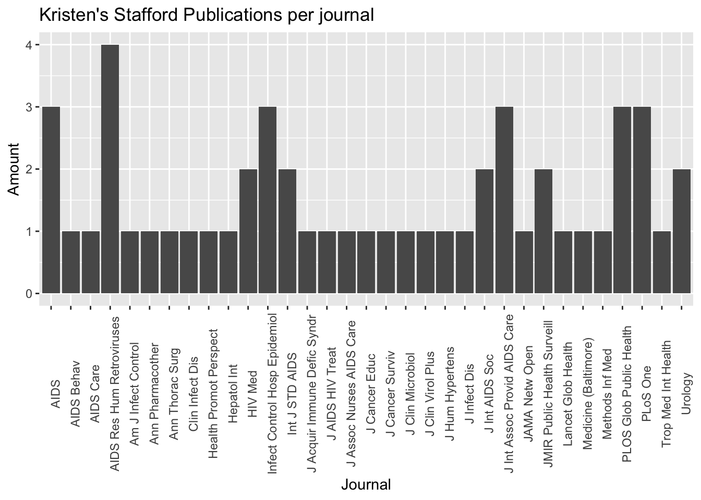

library(rentrez)
library(ggplot2)
#Performing Search
search <- entrez_search(db = "pubmed", term = "Kristen A. Stafford[AUTH]", retmax=100)
#Getting all the summaries
summary <- entrez_summary(db = "pubmed",id=search$ids)
#Extracting information that I am interested in
extract <- extract_from_esummary(summary, "source")R Community of Practice
What data do you chose to work with and why?
During the six week of the R Community of Practice, I chose to use PubMed data. I decided to learn how to use the R package Rentrez to extract data from the PubMed database. Also, I learn to create data visualizations using this package.
What questions did you had about the data that you wanted to answer in the R community of practice?
My questions for PubMed data were:
- How can I get PubMed data without leaving my RStudio window?
- Can I extract publication dates and journals from the PubMed data using Rentrez?
- How can I display this data in a graph?
What steps did you to take to process the data?
To get data from the PubMed database using Rentrez, I had to perform the following steps:
- Read
Rentrezdocumentation - Install and load
Rentrezpackage - Perform my first search in PubMed using the command
entrez_search() - Get summaries of the articles found in my search using
entrez_summary - Extract interesting and needed items using
extract_from_esummary()
A graphical summary of what they found out?
With the skills learned at the R Community of Practice, I was able to create a graph using PubMed Data.
library(rentrez)
library(ggplot2)
#Creating a data visualization
ggplot(mapping = aes(x=extract)) +
geom_bar() +
theme(axis.text.x = element_text(angle = 90)) +
labs(title = "Kristen's Stafford Publications per journal",
x="Journal", y= "Amount")